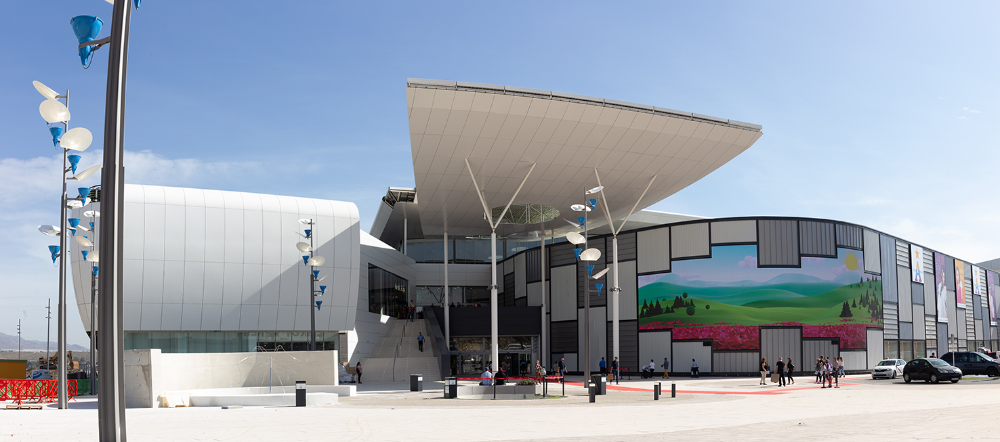

CENTROS COMERCIALES EN ALMERÍA
En Almería tenemos varios centros comerciales como El Gran Plaza (Roquetas de Mar) o COPO (El Ejido) pero el más grande y con más tiendas disponibles es el CCTorrecárdenas.
| C.C./P.C. | |||
| Gran Plaza | COPO | P.C.CEMAR | |
| El Corte Inglés | C.C.Mediterráneo | C.C.Oliveros | |